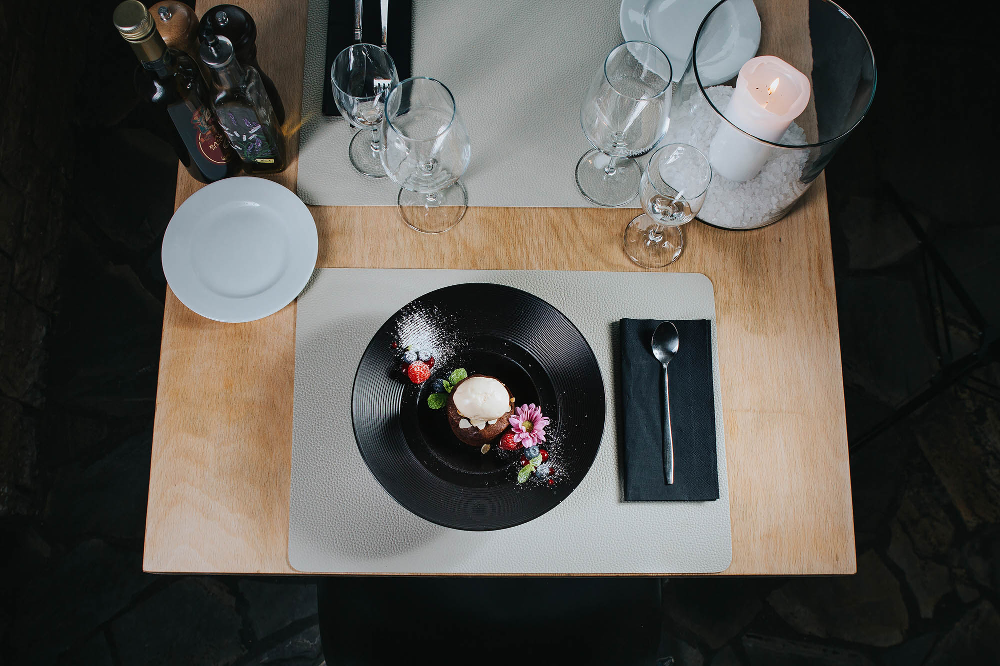
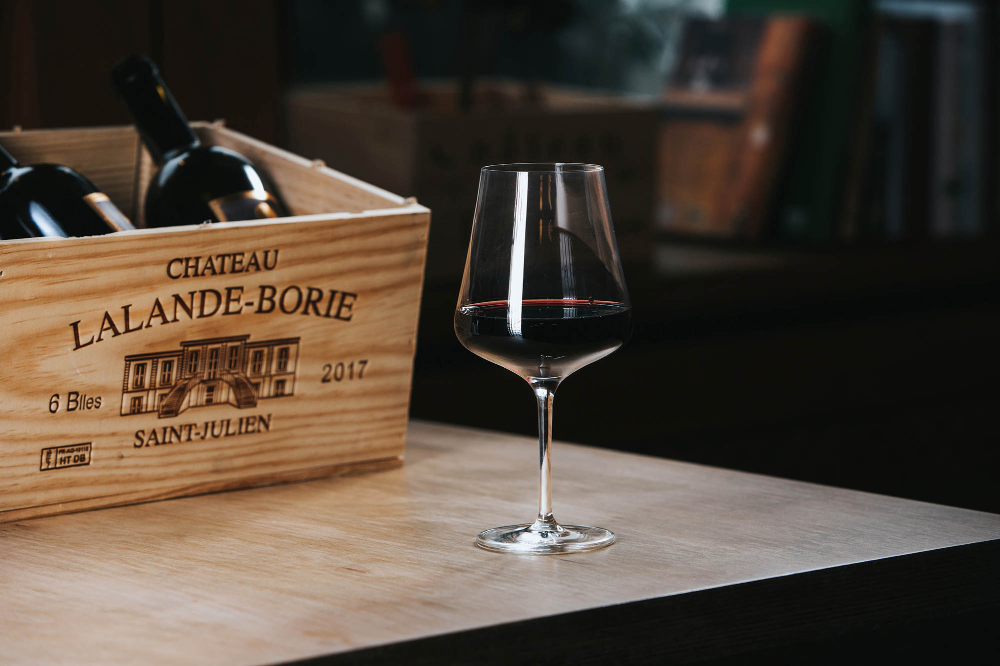

Menu
Odkryj nasze smaki

il nostro menù
Główne Menu
Pasta fresca al ragù
carne mista
Risotto ai funghi porcini
cremoso
Ossobuco alla milanese
con gremolata
Saltimbocca alla romana
vitello e salvia
Autentyczne włoskie dania przygotowywane z najwyższej jakości składników sprowadzanych prosto z Włoch — każde danie to podróż do serca Italii.
Pełne menu →
i dolci
Desery
Tiramisù della casa
mascarpone
Panna cotta al cioccolato
fondente
Cannoli siciliani
ricotta e pistacchio
Semifreddo al pistacchio
artigianale
Tiramisù, panna cotta, cannoli siciliani — klasyki włoskiej cukierni wykonane z rzemieślniczą precyzją i najlepszym mascarpone.
Zobacz desery →
la carta dei vini
Karta Win
Chianti Classico DOCG
Toscana
Barolo
Piemonte
Brunello di Montalcino
Toscana
Prosecco DOC
Veneto
Chianti Classico, Barolo, Brunello di Montalcino, Amarone della Valpolicella — wyselekcjonowane wina z najlepszych włoskich regionów.
Karta win →